코스 안내
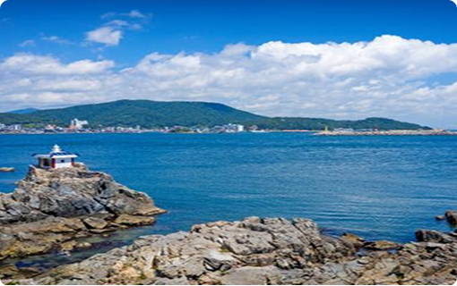
1코스는 "부산의 바다를 여는 길"이라 불리며, 부산의 동쪽 끝 기장군에서 시작해 해운대 초입까지 이어지는 긴 해안 코스입니다. 고즈넉한 어촌 마을의 정취와 화려한 관광 명소를 모두 즐길 수 있는 다채로운 매력을 가졌습니다.
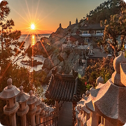
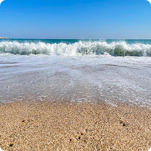
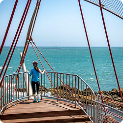
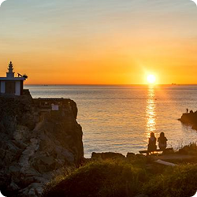
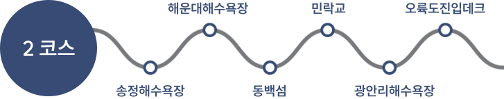
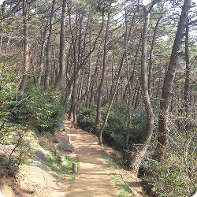
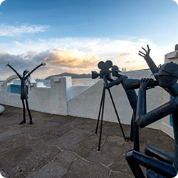
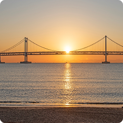
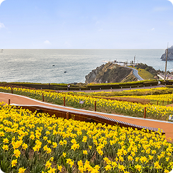
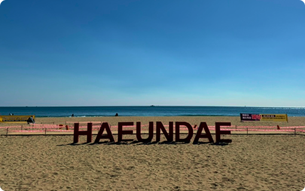
2코스는 '해운대'와 '광안리', 그리고 해안 절벽이 아름다운 이기대를 모두 통과하여 여행객에게 가장 인기가 많은 코스입니다. 부산의 핵심 관광 명소와 탁 트인 동해 바다를 한 번에 즐길 수 있습니다. 문탠로드(달맞이길), 더베이101의 야경, 광안대교까지 이어진 야간 트레킹 명소로 유명합니다.
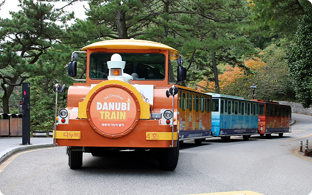
3코스는 오륙도에서 시작해 태종대까지 이어지는 역사와 자연의 대서사시입니다. 부산의 근현대사(피란 수도의 흔적) 가 살아 숨 쉬는 원도심과, 영도의 거친 해안 절벽이 주는 웅장함을 동시에 느낄 수 있습니다. '진짜 부산'의 삶과 투박하지만 깊이 있는 매력을 발견하고 싶은 여행자에게 최고의 코스입니다.
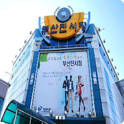
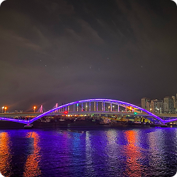
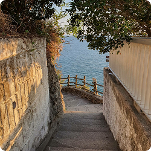
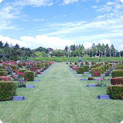
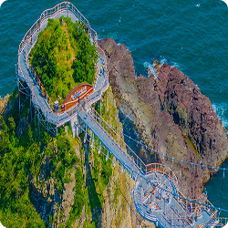
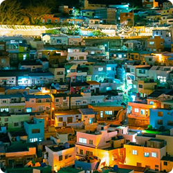
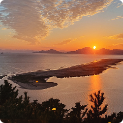
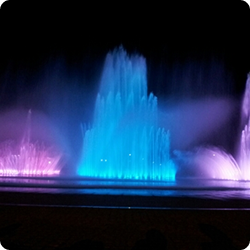
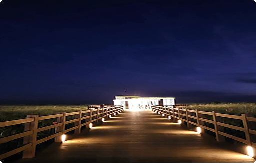
4코스는 남항대교에서 다대포 몰운대 낙조까지 이어지는 '황금빛 낭만'의 코스입니다. 바다 위를 걷는 송도 구름산책로의 짜릿함과, 하루의 끝자락을 붉게 물들이는 다대포의 장엄한 일몰이 완벽한 기승전결을 이룹니다. 가장 아름다운 피날레를 장식하고 싶은 여행자에게 잊지 못할 감동을 선사합니다.
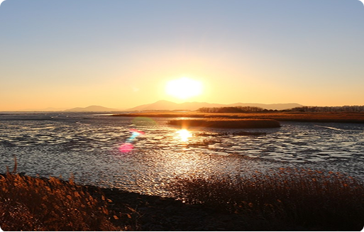
해운대의 일출이 시작이라면, 5코스는 부산의 하루를 닫는 가장 아름다운 일몰있습니다 . 신호대교와 가덕도 연대봉 너머로 떨어지는 붉은 해는 강물과 바다를 온통 주황빛으로 물들이며 환상적인 장관을 연출합니다. 잊지 못할 '인생 노을'을 남기고 싶은 분들에게 강력히 추천하는 로맨틱 코스입니다.
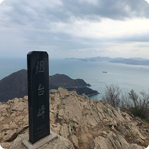
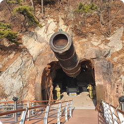
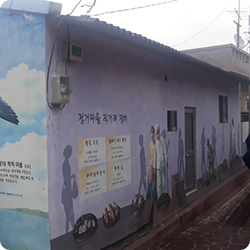
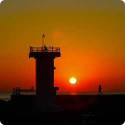
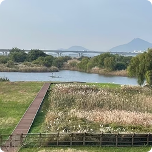
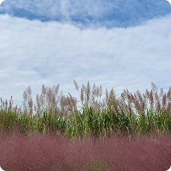
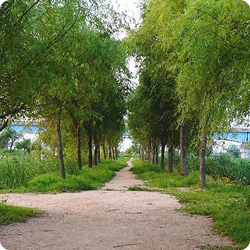
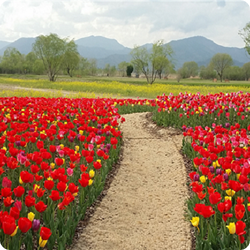
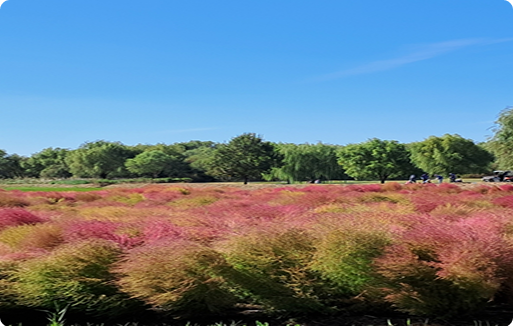
낙동강 하구의 광활한 갈대밭과 삼락생태공원의 평화로운 강변길을 지나 백양산의 울창한 숲길로 접어드는 '반전 매력'의 코스입니다. 시원하게 뻗은 강줄기의 개방감과, 숲이 주는 아늑함을 하루에 모두 느낄 수 있습니다. 부산의 자연이 가진 두 가지 얼굴을 동시에 경험하고 싶은 분들에게 추천합니다.
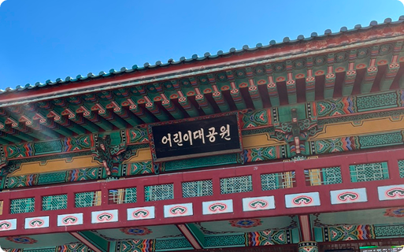
금정산 깊은 곳에 자리 잡은 영남 3대 사찰, 범어사로 향하는 '마음 수행'의 길입니다. 울창한 등나무 군락지와 대나무 숲을 지나 들려오는 은은한 풍경 소리와 목탁 소리는 복잡했던 머릿속을 맑게 씻어줍니다. 역사 깊은 사찰의 고요함을 바라보며, 나를 돌아보는 차분한 시간을 가질 수 있습니다.
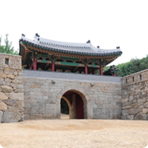
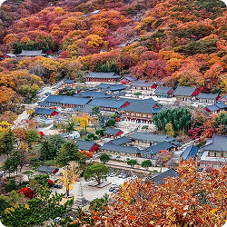
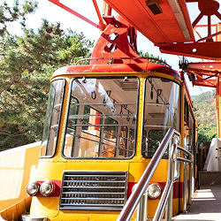
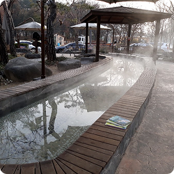
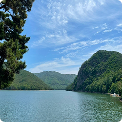
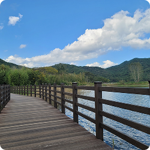
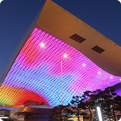
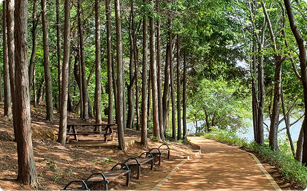
땅뫼산 황토숲길은 신발을 벗고 맨발로 걷기 가장 좋은 '치유의 길'입니다. 부드러운 붉은 황토가 발바닥을 간지럽히고, 편백나무 숲이 뿜어내는 피톤치드가 온몸을 감싸며 스트레스를 날려줍니다. 걷는 것만으로도 건강해지는 기분, 자연과 하나 되는 특별한 경험을 원하는 웰니스 여행자에게 강력 추천합니다.
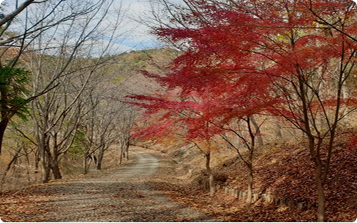
소박하고 평화로운 철마면의 '시골 풍경'을 걷는 길입니다. 졸졸 흐르는 개울과 너른 들판, 정겨운 농촌 마을을 지나며 잊고 지냈던 고향의 향수를 느낄 수 있습니다. 화려한 도심이나 바다와는 결이 다른, 마음이 푸근해지는 '느린 풍경'을 사랑하는 분들에게 추천합니다.
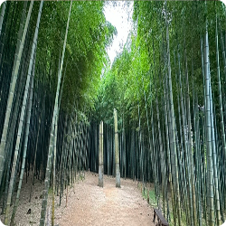
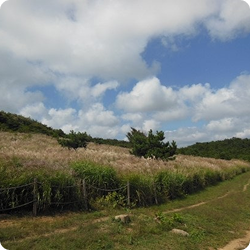
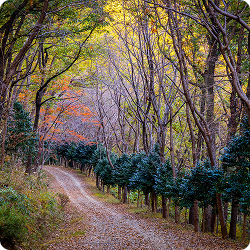
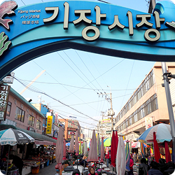